244 pixel-art effects, rebuilt as real 3D voxels.
Fire, explosions, magic, lightning, water, weather, impacts, critters and more: every frame of every effect baked into voxels, one art pixel per cube. Drag an effect from Blender's Asset Browser into your scene and press play. It loops, it glows, and it is a real 3D object you can look at from any side.
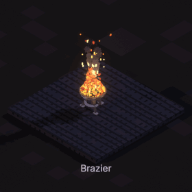
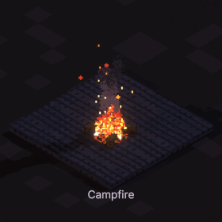
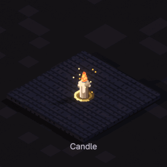
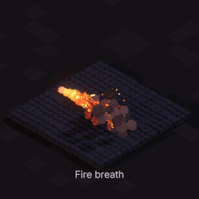
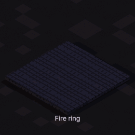
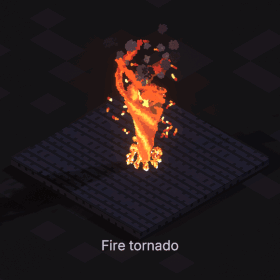
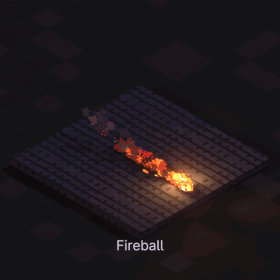
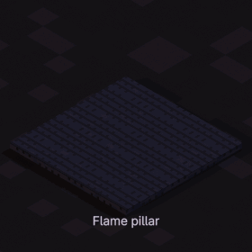
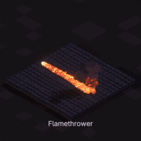
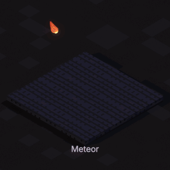
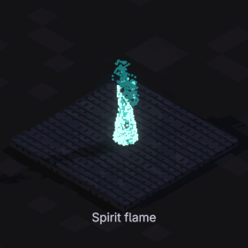
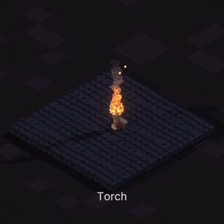
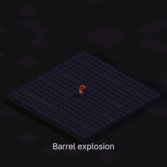
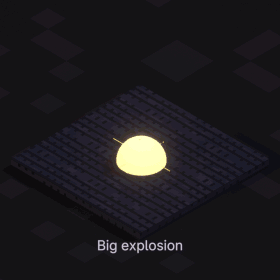
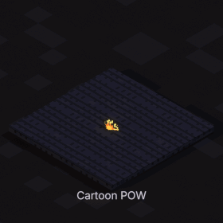
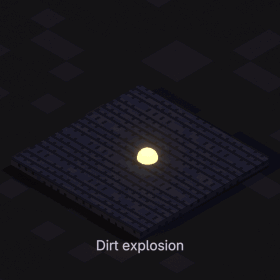
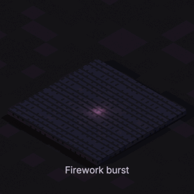
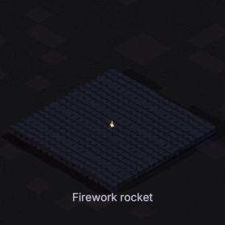
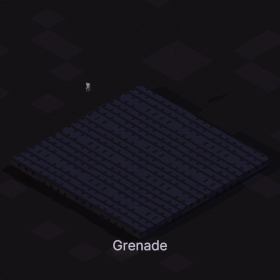
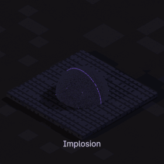
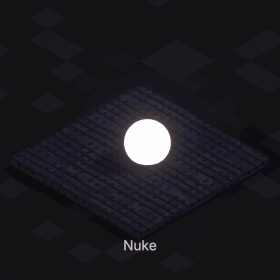
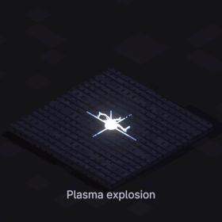
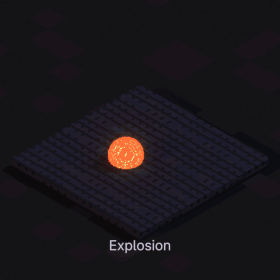
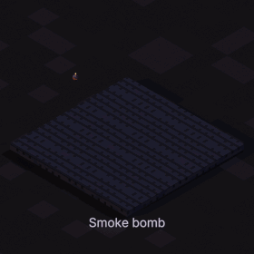
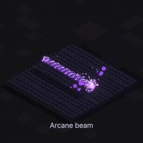
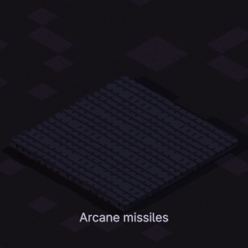
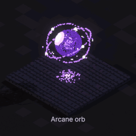
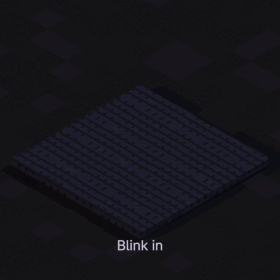
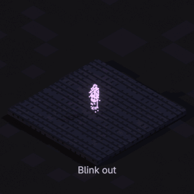
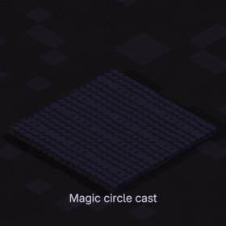
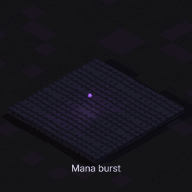
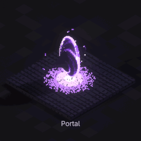
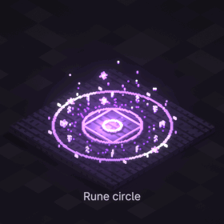
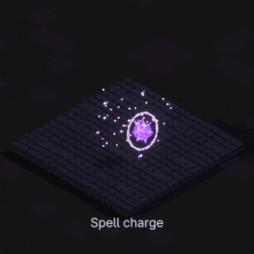
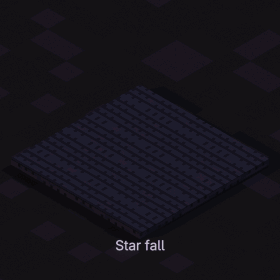
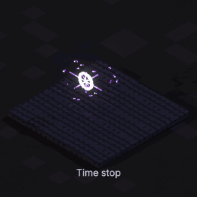
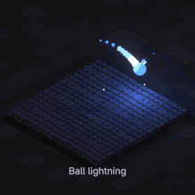
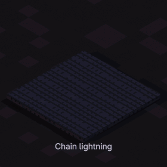
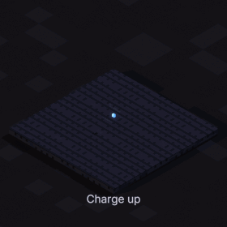
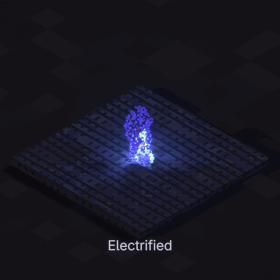
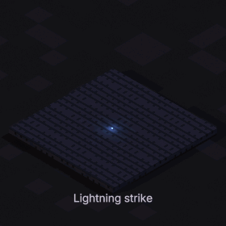
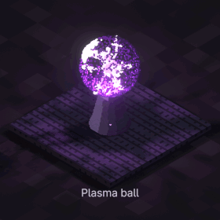
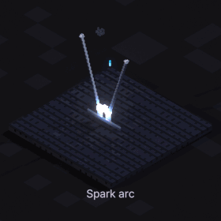
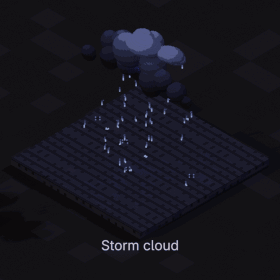
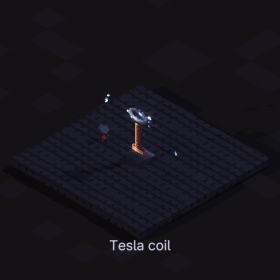
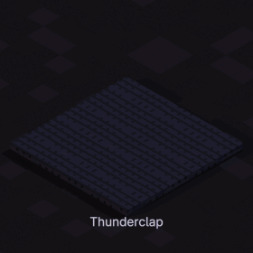
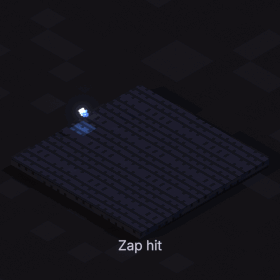
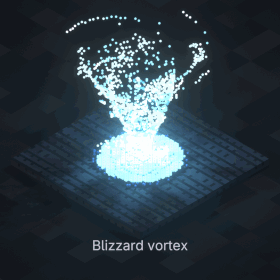
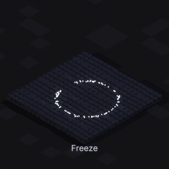
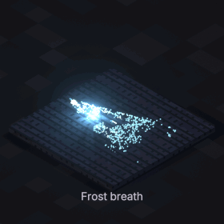
Every tile is the real asset, rendered in Blender from the isometric angle with its name under it. Hover a tile for what the effect does.
No add-on to install or enable: the library is a .blend file. Every effect is a mesh object with one Geometry Nodes modifier.
| Start Frame | the scene frame it starts on |
| Speed | faster or slower |
| Loop | on by default; off plays a one-shot once |
| Voxel Size | cube size: bigger is coarser and lighter, same overall size |
| Viewport Simplify | coarser in the viewport only |
| LOD Distance | coarser with distance from the camera |
| Glow / Light | how much it shines, and how its glow tints the voxels |
A bigger Voxel Size keeps the effect exactly as big and just uses chunkier cubes. In the fountain on the right, twice the voxel size has about a quarter of the cubes and four times has about a fourteenth.
With LOD Distance effects far from the camera get coarser by themselves, and Viewport Simplify keeps the viewport light while renders stay sharp, so you can fill a whole scene.
All 244 effects in one Blender scene, a row per category, rendered in EEVEE with bloom.
Requires Blender 5.2 or newer. Works in EEVEE and Cycles. Documentation
No. It is an asset library: one .blend file with 244 effect objects in 21 catalogs. Nothing to install or enable, and the files you share open anywhere with Blender 5.2+.
Both. In EEVEE, add a Glare node set to Bloom in the compositor for the glow. In Cycles the glowing voxels light the scene around them.
Yes. Every effect loops by default; turn Loop off and it plays once from its Start Frame.
Use Viewport Simplify 2 or 3 while you work and LOD Distance around 10 m for big scenes. A bigger Voxel Size cuts the cube count a lot.
Yes: in your renders, animations and games.
Based on pixelfx by Patch and Hugo Duprez (MIT License). The fire, smoke and particle recipes adapt Sprite Fusion's pixel art VFX (MIT, Hugo Duprez); the moves adapt Hollow Crown (MIT, rehan-remade). Every effect was rebuilt in 3D for this library; the full license text ships with it.